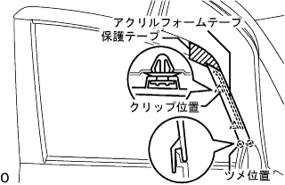
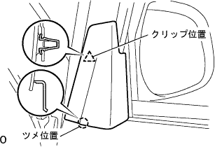

アウタリヤビューミラーASSY RH（サイドターンシグナルランプあり） 取り外し |
| 1. フロントドア ウインドウ フレーム モールディング FR RH取りはずし |
|  |
フロントドアパネルに保護テープを貼る
アクリルフォームテープの接合部およびクリップ2箇所のかん合をはずし、フロントドア ウインドウ フレーム モールディング FR RHを上方に引き抜きながら取りはずす。
| 2. ドア プルハンドル取りはずし |
スクリューをはずし、ドアプルハンドルを取りはずす。
| 3. フロントドアロワーフレームブラケット ガーニッシュ RH取りはずし |
|  |
手でクリップ(上部)のかん合をはずす。
手で引きながらツメ(下部)のかん合をはずし、フロントロワーフレームブラケットガーニッシユRHを取りはずす。
| 4. フロントドアトリム ボードSUB-ASSY RH取りはずし |
 |
スクリューを取りはずす。
プラスドライバーを使用してクリップの中央部を９０°回転させ、クリップを取りはずす。
トリムボードを車両内側に手で引きながら保護テープを貼ったマイナスドライバーを使用して図の9箇所のクリップのかん合をはずす。
フロントドアトリムボードRHを引き上げて取りはずす。
| 5. アウタリヤビューミラーASSY RH取りはずし |
コネクタを切り離す。
スクリュー３本をはずし、アウタリヤビユーミラーASSY RHを取りはずす。